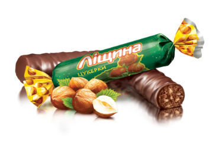

Червоний мак
Пралене з додаванням карамельної крихти, пасти ядер горіхів фундука та мигдалюпокрите шоколадною глазурʼю
Сливки-ленивки
Світлі вафельні листи, поєднані молочно-вершковою начинкою та покриті глазур’ю.

Ліщина
Праліне з додаванням подрібненої та тертої ліщини та мигдалю, покрите шоколадною глазур’ю.